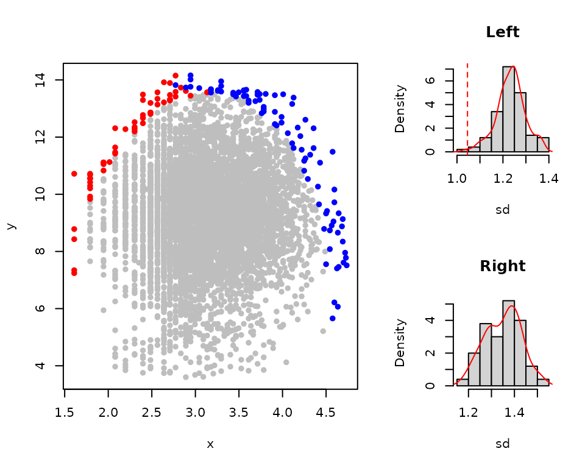
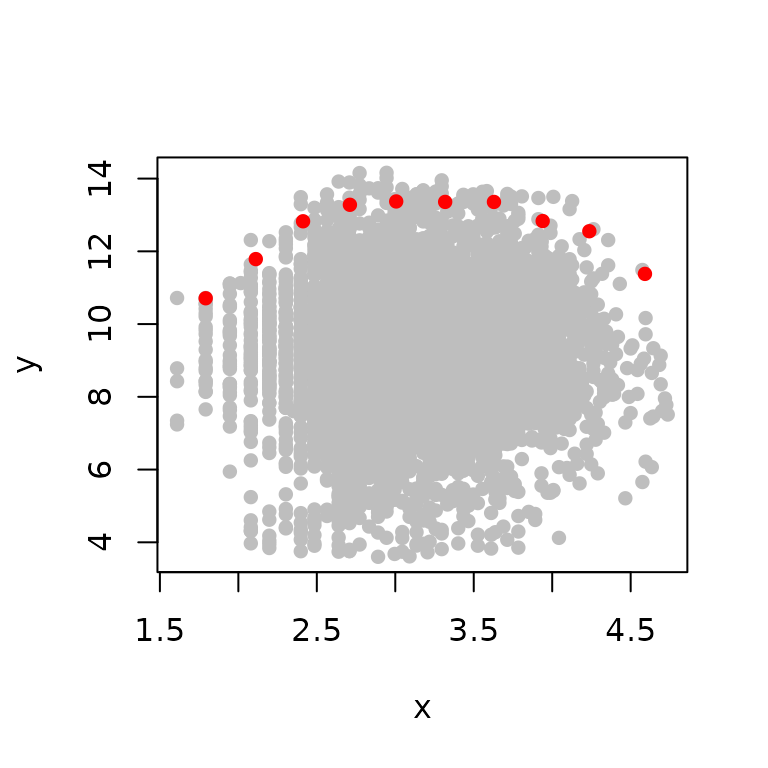

This Vignette describe the theory of boundary line analysis and the process fitting the boundary line to a data set.
Background
When a biological response, y, is observed as
function of a single factor of interest, x, in an
uncontrolled environment i.e. when the influence of other factors is not
controlled, a scatter of observations is observed due to the many
sources of variation. If, for example, x along
with other factors contributes in some additive way to variation of
y then then a bivariate normal distribution may be
expected. However, more complex effects are possible. For example, if
the data set is large enough to contain a wide range of combinations of
conditions, and x and other factors influence y in accordance with some
non-linear process as characterized by the law of the minimum, or the
law of the optimum (see Miti et al, 2024a), then the data
points that are observed in most favourable conditions for the response
y will fall at the upper edges of the data cloud,
which would be the maximum possible response of y
given some value of x. The data points that fall
below the maximum response are as a result of the limiting effect of
other factors that are not controlled for. Webb (1972) suggested a
methodology that can be used to describe the relationship of data points
at the upper edges of such data sets which is the most likely
relationship of y and x when
all other factors are not limiting. He referred to this relationship as
the boundary line.
The initial boundary line method by Webb (1972) involved the
selection of data points at the upper edges of the data cloud visually.
The boundary line model was then fitted to the selected data points to
describe the relationship. Currently, many other procedures of fitting
the boundary line model to the dataset have been developed to improve
the procedure some of which are statistical and some heuristic. These
include binning, BOLIDES, quantile regression, makowski quantile
regression and the censored bivariate normal methods. Similarly, data
exploratory methods have been developed that provide evidence of
boundary existence in a dataset which therefore, justifies the use of
boundary line analysis on a data set (Milne et al. 2006).
Colleagues of Webb (1972), who provided the initial data on which
boundary line analysis was first applied, were not convinced that the
data realized a boundary, hence the need for testing of data sets for
presence of boundary. If a boundary exists in data set, it is expected
that the distribution of points at the upper edges of data cloud would
be clustered and not randomly distributed because response can not go
beyond the observed boundary. Evidence for such a distribution provides
grounds for proceeding to a boundary line analysis, and Miti et
al. (2024b) describe the method which this package provides to
evaluate this evidence. It should be noted that more powerful testing
against an alternative bivariate normal distribution can be done after
fitting a boundary line model with the cbvn() function.
The BLA package provides a group of functions to
carryout boundary line analysis on a data set in R
software. It includes functions to explore data, test evidence of
boundary in a data set, fit the boundary line and do post-hoc analysis
after fitting a boundary line.
Boundary line analysis using BLA package
Load the BLA package
With the BLA package installed, the first step is to
load it to your R session using the library() command.
The package aplpack has also been loaded for use in the
outlier detection function bagplot().
Data
The BLA package contains a data set called soil which
consisting of soil pH, phosphorus and wheat yield measurements from
farms in the UK. We will use this data set to illustrate the functions
in the BLA package. To view the first six lines of the
data, run the code below:
head(soil)
#> yield pH P
#> 1 9.55787 6.66 10
#> 2 8.88999 6.92 9
#> 3 8.38731 6.83 10
#> 4 9.19583 6.34 9
#> 5 9.83057 6.74 9
#> 6 11.88140 6.54 12Exploratory analysis
An exploratory analysis is an important initial step in boundary line analysis. This step serves to show how the data are distributed using various indices and also to check for outliers in the data set. If a variable in a dataset is skewed, especially the independent variable, a transformation may be required so it can be assumed to be from a normal distribution. As the boundary line analysis is sensitive to outlying values, these must be identified and removed if required. Under the boundary line model we may expect to see non-normal variation of the response variable, in this case P, possibly with an increased density at the upper bound but the rest of the data points must appear as plausibly drawn from a normal distribution. Exploratory analysis, particularly using plots, and robust statistics such as the octile skewness, provides a basis to assess the plausibility of an underlying normal variable, perhaps with a censoring effect and whether a transformation is needed, as well as the form of model that can be fitted.
Normality test
To assess the distribution of the data, the summastat()
function provides different summary statistics and the graphical
representation of the variable distribution. Let us set the variables P
and wheat yield in the data set to x and
y respectively before applying the
summastat() functions
x<-soil$P
y<-soil$yield
summastat(x)#> Mean Median Quartile.1 Quartile.3 Variance SD Skewness
#> [1,] 25.9647 22 16 32 207.0066 14.38772 1.840844
#> Octile skewness Kurtosis No. outliers
#> [1,] 0.3571429 5.765138 43
summastat(y)#> Mean Median Quartile.1 Quartile.3 Variance SD Skewness
#> [1,] 9.254813 9.36468 8.203703 10.39477 3.456026 1.859039 -0.4819805
#> Octile skewness Kurtosis No. outliers
#> [1,] -0.05793291 1.292635 7From the results, wheat yield (y) variables can
be considered to be normally distributed while the soil P
(x) is skewed. For a variable to be assumed to be
from a normal distribution, the indices skewness should be between -1 to
1 and Octile skewness between -0.2 to 0.2. A graphical representation of
the distribution is given as well.
The soil P can be log transformed and check the summary statistics and plot

#> Mean Median Quartile.1 Quartile.3 Variance SD Skewness
#> [1,] 3.126361 3.091042 2.772589 3.465736 0.2556936 0.5056615 0.1297406
#> Octile skewness Kurtosis No. outliers
#> [1,] 0.08395839 -0.05372586 0
x<-log(x) # transforms soil P to log From the results, variable log of soil P can be assumed to be from a normal distribution.
Outlier detection and removal
Outliers are identified using the bagplot method (Rousseeuw et
al., 1999). A bag plot is a multivariate equivalent of a box plot.
We utilise the bagplop() function from the
aplpack package to produce bagplots.The bagplot has three
main components. There are
depth median which represent the center of the data cloud. This is equivalent to the median in a univariate box-plot
Bag which contains 50% of all the data points. This is equivalent to the inter-quartile range in a univariate box-plot.
Loop which contains all points that are outside the bag but are not outliers
Outliers which are values outside the loop
vals_ur<-matrix(NA,length(x),2) #Create a matrix with x and y as required by the bag plot function
vals_ur[,1]<-x
vals_ur[,2]<-y
bag<-bagplot(vals_ur, ylim=c(0,20), show.whiskers =F,create.plot = TRUE) # run the bagplot function
legend("topright", c("bag","loop","outliers", "d.median"),
pch = c(15,15,16,8),col=c("blue","lightblue","red","red"),
cex=0.7)
vals<-rbind(bag$pxy.bag,bag$pxy.outer) # to remove outliers, select points in the bag and loop onlyThe variables x and y and
now be extracted from the results of the bag plot with outliers
removed
x<-vals[,1]
y<-vals[,2]Test for presence of boundary in dataset
The function exp_boundary() can be used to evaluate
evidence that observations are clustered near an upper boundary in a
data set, testing this against an unbounded bivariate normal
distribution as a null hypothesis. The standard deviation (sd)
of the the Euclidean distance of the boundary points to the centre of
the data set is used to measure the density of the points at the upper
edges of the data. The smaller the sd value, the denser the
distribution. This function uses the convex hull to select the points at
the upper boundary. The default is selecting the first 10 consecutive
convex hulls (shells=10). The convex hulls are then splits
into two sections, the right and left sections, and evidence of boundary
existence in both sections is checked by determining the probability of
having the observed density of points at the upper edges of the data
under the bivariate normal null hypothesis. More detail is provided by
Miti et al. 2024b. We reject the null hypothesis if p<
0.05.
bound_test<-expl_boundary(x,y,shells = 10, simulations = 100,
pch=16, col="grey") # 
bound_test
#> Index Section value
#> 1 sd Left 1.045711
#> 2 sd Right 1.115379
#> 3 Mean sd Left 1.134728
#> 4 Mean sd Right 1.200326
#> 5 p_value Left 0.030000
#> 6 p_value Right 0.020000The p-values in the left and right sections are both less than 0.05. These results indicate evidence of an upper boundary in both the left and right sections of the scatter. This suggests that there is a justification to fitting the boundary to the data. A graphical representation of the scatter plot with the boundary points is also given as well as the density histograms showing the observed standard deviation given 10000 simulated standard deviations from normal unbounded data .
Fitting boundary line using different methods
The exploratory tests indicated that the data provides evidence of an
upper boundary, there are no outliers and the variables,
x and y, appear normally
distributed. We therefore, proceed to fit a boundary line model to the
data set. There are several methods that can be used to fit a boundary
line to the data set which can be classified as heuristic (Bolides,
Binning & quantile regression) and statistical methods (censored
bivariate normal). Miti et al. (2024a) give more detail on each
of these methods.
Bolides algorithm
This method fit the boundary line following the boundary line
determination technique proposed by Schnug et al. (1995). To
fit the boundary line using the BOLIDES algorithm , the
bolides() function can be used. To check the required
arguments for the function, the help page can be launched.
?bolidesThe arguments x and y are
the independent and dependent variable respectively and
start is a vector of starting values . The
model argument is used to specify the model of the boundary
line e.g. “blm” for the linear model. The xmax is an
argument that describes the maximum value of the independent variable
beyond which the relation of x and
y is no longer theoretically feasible. Other
arguments relate to the plot parameters as in the plot()
function.
All boundary fitting methods require initial starting values for the
parameters of a proposed model. The initial starting values are
optimized to find the parameters of the proposed model as in the
optim() function in base R.
To get the start starting values, the bolides() function
is run with the argument model="explore". This allows us to
view the selected boundary points using the boundary line determination
technique.
bolides(x,y,model = "explore", pch=16, col="grey")#> x y
#> Min. :1.609 Min. : 7.513
#> 1st Qu.:2.583 1st Qu.:10.817
#> Median :3.649 Median :12.566
#> Mean :3.464 Mean :11.965
#> 3rd Qu.:4.520 3rd Qu.:13.575
#> Max. :4.736 Max. :14.159From the plot, it can be seen that a “trapezium” model will be more
appropriate for this data set. The function startValues()
can be used to determine initial start values. For more information on
startValues() function see ?startValues().
?startValues()With a scatter plot of y against
x active in the plot window in R, run
the function startValues("trapezium"), then use the mouse
to click on the plot at five boundary points that follow the trapezium
model in order of increasing x values.
startValues("trapezium") # then select the five points at the edge of the dataset that make up the trapezium model in order of increasing x values.The proposed start values will be produced. Note that this can be done for other models as well. Once all the arguments are set, the function can be run
start<-c(4,3,14,104,-22) # start values is a vector of five consists of intercept, slope, plateau yield, intercept2 and slope2.
model1<-bolides(x,y, start = start,model = "trapezium",
xlab=expression("Phosphorus/ln(mg L"^-1*")"),
ylab=expression("Yield/ t ha"^-1), pch=16,
col="grey", bp_col="grey")
model1
#> $Model
#> [1] "trapezium"
#>
#> $Equation
#> [1] y = min(β₁ + β₂x, β₀, β₃ + β₄x)
#>
#> $Parameters
#> Estimate
#> β₁ 4.765511
#> β₂ 3.456652
#> β₀ 13.573119
#> β₃ 108.346207
#> β₄ -21.263562
#>
#> $RMS
#> [1] 0.2174186The results show that the optimized parameters and plot of the fitted model. There is no uncertainty in the parameters because this is a heuristic method.
These parameters can then be used to determine boundary line response
for any given value of x. Say you want to predict
the maximum possible yield response at soil P values of 4.5, 7.4, 12.2,
20.1 and 54.5 mg/kg. Remember that our model was fitted on values of log
soil P and therefore, these values must first be log transformed before
the prediction is made. We can use the function predictBL()
for this purpose. For more information on this function, see
?predictBL() .
Binning method
The binning methodology involves splitting the data into several
sections in the x-axis and selecting a boundary point in each section
based on a set criteria (mostly the 95\(^{\rm
th}\) and 99\(^{\rm th}\)
percentile) (Shatar and McBratney, 2004). To fit the boundary line using
the binning method, the blbin() function can be used. To
check the required arguments for the function, the help page can be
launched.
?blbinThe arguments x and y are
the independent and dependent variable respectively and
start is a vector of starting values . The
model argument is used to specify the model of the boundary
line e.g. model="blm" for the linear model. The
bins argument describes the size of the bins with a vector
of length 3 containing the minimum and maximum independent variable
values, and the size of bins to be used for the data respectively. We
assume that the 99\(^{\rm th}\)
percentile (tau=0.99) is the boundary.
The initial start start values can be determined as previously shown in the previous section

#> x y
#> Min. :1.792 Min. :10.71
#> 1st Qu.:2.487 1st Qu.:11.98
#> Median :3.162 Median :12.83
#> Mean :3.175 Mean :12.55
#> 3rd Qu.:3.862 3rd Qu.:13.34
#> Max. :4.591 Max. :13.37From the plot, it can be seen that a “trapezium” model will be more appropriate for this data set.
startValues("trapezium")The values for start can now be obtained and the
function can now be run.
start<-c(4.75, 3.23, 13.3, 24.87,-2.95 )
model2<-blbin(x,y, bins,start = start,model = "trapezium",
tau=0.99,
ylab=expression("t ha"^-1),
xlab=expression("Phosphorus/ln(mg L"^-1*")"),
pch=16, col="grey", bp_col="grey")
model2
#> $Model
#> [1] "trapezium"
#>
#> $Equation
#> [1] y = min(β₁+ β₂x, β₀, β₃ + β₄x)
#>
#> $Parameters
#> Estimate
#> β₁ 4.595981
#> β₂ 3.409921
#> β₀ 13.342115
#> β₃ 21.883246
#> β₄ -2.262389
#>
#> $RMS
#> [1] 0.01027899The results show that the optimized parameters and plot. There is no
uncertainty in the parameters because this is a heuristic method. These
parameters can then be used to determine boundary line response for any
given value of x using the
predictBL() function.
Quantile regression method
This method fits the boundary line using the principle of quantile
regression (Cade and Noon, 2003). To fit the boundary line using the
quantile regression method, the blqr() function can be
used. To check the required arguments for the function, the help page
can be launched.
?blqrThe arguments x and y are
the independent and dependent variable respectively and
start is a vector of starting values . The
model argument is used to specify the model of the boundary
line e.g. “blm” for the linear model. The argument tau
describes the quantile value described as boundary. We assume that the
99\(^{\rm th}\) quantile
(tau=0.99) value is the boundary. This is an arbitrary
assumption, and for this reason we treat the method as heuristic.
The initial start start values can be determined as previously shown
in the previous section. however, the blqr() function does
not have the explore option and hence the startValues()
function is used just on the plot of x and
y directly according to the suggested model from
the structure at the upper edge of the data. The trapezium model will be
used for this data.
plot(x,y)
startValues("trapezium")The startvalues can now be used in the
blqr() function.
start<-c(4,3,13.5,31,-4.5)
model3<-blqr(x,y, start = start, model = "trapezium",
xlab=expression("Phosphorus/ mg L"^-1),
ylab=expression("Phosphorus/ln(mg L"^-1*")"),
pch=16,tau=0.99, col="grey") # may take a few seconds to ran
model3
#> $Model
#> [1] "trapezium"
#>
#> $Equation
#> [1] y = min(β₁ + β₂x, β₀, β₃ + β₄x)
#>
#> $Parameters
#> Estimate
#> β₁ 7.559968
#> β₂ 2.142848
#> β₀ 13.363650
#> β₃ 30.667717
#> β₄ -4.192797
#>
#> $RSS
#> [1] 252.7349The results show that the optimized parameters and plot. The quantile
regression method will produce measures of uncertainty for parameters,
but BLA does not report these because they are conditional on the
arbitrary choice of tau. These parameters can then be used
to determine boundary line response for any given value of
x using the predictBL() function.
Censored bivariate normal model
To fit the boundary line using the Censored bivariate normal model
method, see the
vignette("Censored_bivariate_normal_model").
Using your own defined model
The illustrated methods for fitting the boundary line have some
in-built models. These include the linear, linear plateau, mitscherlich,
schmidt, logistic, logistic model proposed by Nelder (1961), the inverse
logistic, double logistic, quadratic and the trapezium models. However,
there are some cases where one wants to fit another model which is not
part of the built in models. The following steps will illustrate how to
fit a custom model. Though this will be illustrated using the
bolides() function, it also applies for the
blbin(), blqr() and cbvn()
functions.
Assuming that the initial data exploratory step have been done, the
first step is to check the structure of the boundary points using the
argument model="explore" in the bolides()
function.
bolides(x,y,model="explore", pch=16, col="grey")
#> x y
#> Min. :1.609 Min. : 7.513
#> 1st Qu.:2.583 1st Qu.:10.817
#> Median :3.649 Median :12.566
#> Mean :3.464 Mean :11.965
#> 3rd Qu.:4.520 3rd Qu.:13.575
#> Max. :4.736 Max. :14.159Lets say you want to fit a model
\[ y=\beta_0 - \beta_1(x-\beta_2)^2 \]
The model is written in form of an R function and the
parameters should always be written in alphabetical order as
a, b and
c for a three parameter function,
a, b,c and
d for four parameter function and so on.
custom_function<-function(x,a,b,c){
y<- a - b*(x-c)^2
}The next step is to suggest the initial start start
values. These should be sensible values else the function will not
converge. These should be arranges in alphabetical order as
start=c(a,b,c). Replace a, b and c with numeric values of
your choice.
The arguments of bolides() function can now be added. In
this case, the argument model while be set to “other”. The arguments
equation is now set to your custom function
(equation=custom_function)
start<-c(13.5,3,3.3)
model4<-bolides(x,y, start = start,model = "other",
equation=custom_function,
xlab=expression("Phosphorus/mg L"^-1),
ylab=expression("Phosphorus/ln(mg L"^-1*")"),
pch=16, ylim=c(3.8,14.5), col="grey",bp_col="grey")
model4
#> $Model
#> [1] "other"
#>
#> $Equation
#> function(x,a,b,c){
#> y<- a - b*(x-c)^2
#> }
#> <bytecode: 0x55763d1489a0>
#>
#> $Parameters
#> Estimate
#> a 14.498417
#> b 2.175998
#> c 3.128628
#>
#> $RMS
#> [1] 0.5166668The parameters of the models are shown in the results. A prediction
of the boundary response values for each value of
x can the be done as previously shown using the
predictBL() function.
Closing remarks
The boundary line fitting methods illustrated here all use the
optimization function to determine the parameters of the proposed
models. To remove the risk of local optimum parameters, it is advised
that the models are ran on several starting values and the results with
the smallest error can be selected. Each method produces the error value
in the output. It is residue mean square (RMS) for blbin()
and bolides() while blqr() it is the residue
sum squares (RSS). For the cbvn(), use the likelihood
value.
References
Cade, B. S., & Noon, B. R. (2003). A gentle introduction to quantile regression for ecologists. Frontiers in Ecology and the Environment, 1(8), 412-420. https://doi.org/10.1890/1540-9295(2003)001[0412:AGITQR]2.0.CO;2
Lark, R. M., Gillingham, V., Langton, D., & Marchant, B. P. (2020). Boundary line models for soil nutrient concentrations and wheat yield in national-scale datasets. European Journal of Soil Science, 71 , 334-351. https://doi.org/10.1111/ejss.12891
Milne, A. E., Wheeler, H. C., & Lark, R. M. (2006). On testing biological data for the presence of a boundary. Annals of Applied Biology, 149 , 213-222. https://doi.org/10.1111/j.1744-7348.2006.00085.x
Miti, C., Milne, A., Giller, K., Sadras, V., & Lark, R. (2024). Exploration of data for analysis using boundary line methodology. Computers and Electronics in Agriculture, 219. https://doi.org/10.1016/j.compag.2024.108794
Miti, C., Milne, A., Giller, K., & Lark, R. (2024). The concepts and quantification of yield gap using boundary lines. a review. Field Crops Research, 311. https://doi.org/10.1016/j.fcr.2024.109365.
Nelder, J.A. 1961. The fitting of a generalization of the logistic curve. Biometrics 17: 89–110. https://doi.org/10.2307/2527498
Rousseeuw, P. J., Ruts, I., & Tukey, J. W. (1999). The bagplot: A bivariate boxplot. The American Statistician, 53, 382–387. https://doi.org/10.1080/00031305.1999.10474494
Shatar, T. M., & McBratney, A. B. (2004). Boundary-line analysis of field-scale yield response to soil properties. Journal of Agricultural Science, 142 , 553-560.
Schnug, E., Heym, J. M., & Murphy, D. P. L. (1995). Boundary line determination technique (bolides). In P. C. Robert, R. H. Rust, & W. E. Larson (Eds.), site specific management for agricultural systems (p. 899-908). Wiley Online Library. https://doi.org/10.2134/1995.site-specificmanagement.c66
Webb, R. A. (1972). Use of the boundary line in analysis of biological data. Journal of Horticultural Science, 47, 309–319. https://doi.org/10.1080/00221589.1972.11514472